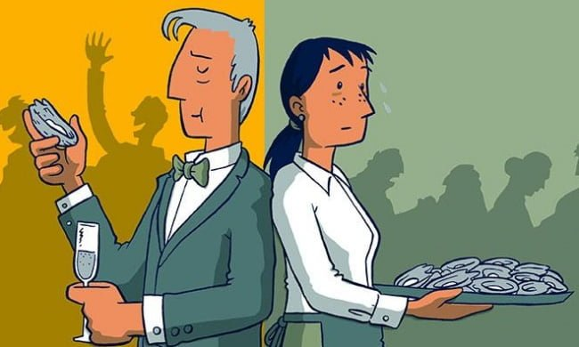
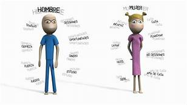
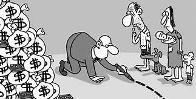

 La desigualdad no se trata solo de la riqueza, el patrimonio neto, o de los ingresos, el sueldo bruto. También puede abarcar la expectativa de vida, la facilidad que tienen las personas para acceder a los servicios de salud, la educación de calidad o los servicios públicos. Hay desigualdades entre los géneros y entre los grupos sociales. Además, la desigualdad aumenta y persiste porque algunos grupos tienen más influencia sobre el proceso legislativo, lo que impide a otros grupos hacer que el sistema responda a sus necesidades. Esto lleva a distorsiones de políticas y socava el proceso democrático. Cada faceta de la desigualdad entorpece enormemente nuestra capacidad de alcanzar los Objetivos de Desarrollo Sostenible, por ello debemos tener en cuenta cada aspecto de la desigualdad si queremos promover la Agenda 2030. Un estudio de Oxfam indica que 26 personas poseen la misma riqueza que 3800 millones de personas. Mientras, más de la cuarta parte de todos los adultos que trabajan son pobres, ganando menos de 3,10 dólares por día. El número de trabajadores mal pagados va en aumento.
La clasificación más obvia de la desigualdad social tiene que ver con los motivos de la discriminación. Así, podemos hablar de desigualdad social según: Posición económica. Probablemente la más común de las formas de desigualdad social, tiene su anclaje en la capacidad económica del individuo o de la clase a la que pertenece, separando así el mundo de los ricos, la clase media y los pobres, en detrimento obviamente de los que ocupan los peldaños inferiores. Quienes están más abajo en la escala tienen menos acceso a bienes y servicios, a una representación política, a la visibilidad simbólica y cultural, así como al estudio e incluso a una alimentación adecuada. Dependiendo de lo alejados que estén estos estratos sociales, se podrá hablar de sociedades de castas, en las que escalar a los peldaños superiores es prácticamente imposible. Religión. Las luchas religiosas son tan antiguas como el hombre, y en muchas sociedades modernas aún constituyen un factor de desigualdad entre grupos humanos, reservando el poder y las oportunidades a quienes profesen una determinada fe, y condenando a los de otras, a menudo referidos como “infieles” o “herejes”. Género. Se trata de la discriminación por sexo biológico (como en el caso de las mujeres) o por orientación sexual (como en el caso de la colectividad LGBT), que reserva las posiciones mandantes y más favorecidas para los hombres heterosexuales (sobre todo si son blancos) y margina a quienes no se inscriban en cierto ordenamiento tradicional de los roles sexuales o eróticos. Etnia. La discriminación racial otorga la posición superior a determinadas razas o etnias, subyugando a su voluntad a otras por considerarlas “inferiores” o “diferentes”, y negándoles así el acceso a bienes o incluso a derechos fundamentales, como el de la vida. Algunas de las grandes masacres y genocidios de la historia tienen su fundamento en este tipo de discriminación. Ideología. En este caso se trata de discriminación política, o sea, la desigualdad de oportunidades y bienes entre quienes se adhieran a una doctrina política y quienes no, o quienes se les opongan. Es lo que ocurre en gobiernos totalitarios o en dictaduras, por ejemplo.
La desigualdad social no tiene una única causa, sino que es una consecuencia del modo en que ha transcurrido nuestra historia como especie. El pensador francés Jean-Jacques Rousseau reflexionó sobre el origen de la desigualdad entre los hombres y aseguraba que el origen de ésa se hallaba en el estado social, es decir, que el hombre no nace en la desigualdad, sino que la adquiere al empezar a compararse con sus semejantes y ver el modo en que éstos viven. El estudio de las sociedades primitivas ha demostrado que se trataba de sociedades mucho más igualitarias en el reparto del trabajo y de los beneficios, pero en algún lugar del período neolítico se inició un proceso de jerarquización y de construcción del Estado que implicó la repartición del trabajo y la división social, algo que alcanzaría su pico con la invención de la esclavitud y de la explotación del hombre por el hombre.
La desigualdad social tiene consecuencias muy concretas y muy contrarias al desarrollo armónico de las naciones o de la humanidad. La perpetuación de la pobreza, el afianzamiento del resentimiento y la necesidad de las revoluciones o de los conflictos violentos son apenas algunas de ellas, ya que el malestar de hallarse estancado en estratos sociales inamovibles suele conducir a la depresión o a la rabia en las colectividades oprimidas. Por otro lado, los oprimidos nunca logran desarrollar totalmente su potencial, ya que los recursos necesarios para ello están siendo aprovechados por otros, lo cual ocasiona una pérdida de potencial humano incalculable. Y la pobreza, lejos de ser un mal sencillo, es la fuente de numerosas dificultades sumamente arduas de combatir: el riesgo a la salud, el incremento del crimen, el odio de clases, el deterioro de la política, etc.